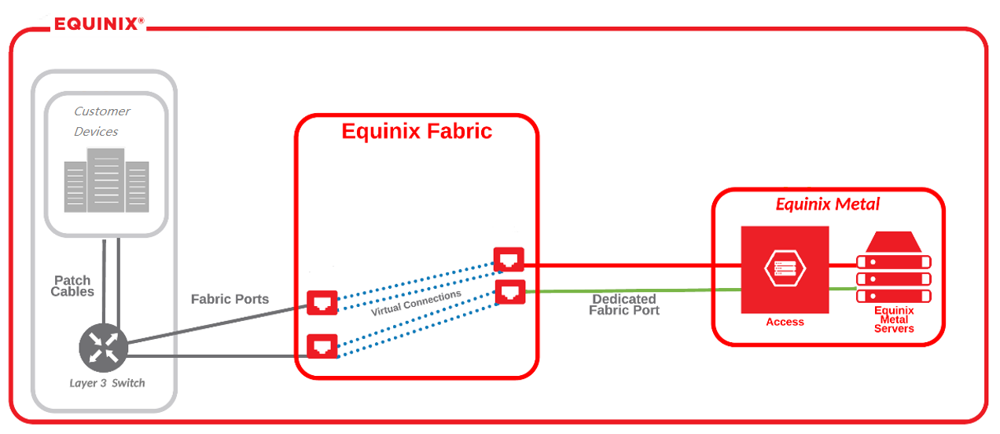
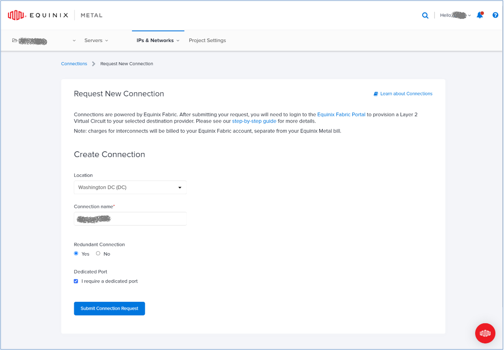
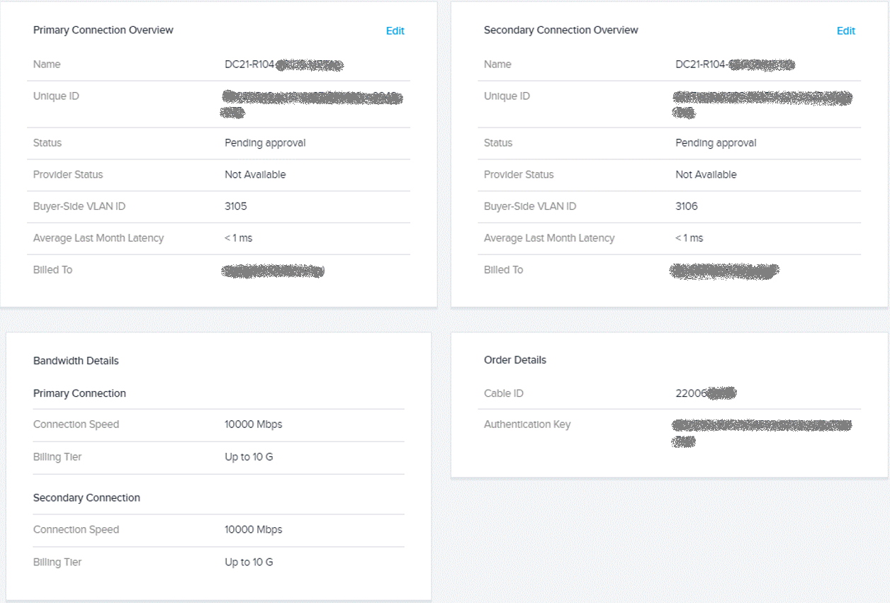

[Equinix] 从 Equinix Metal 到 Equinix IBX 数据中心
From Equinix Metal to Equinix IBX
从 Equinix Metal 向外访问
Equinix Metal 数据中心向外访问的场景，大概有这几种情况：
- 某个区域的 Equinix Metal 数据中心访问其他区域的 Equinix Metal 数据中心
- 从 Equinix Metal 数据中心访问 Equinix IBX 数据中心
- 从 Equinix Metal 数据中心访问 Equinix 生态中的服务，或者公有云
对了，这里列举的访问场景，都是基于 private 链路的的相对低延时的访问。基于公共 internet 的访问不在讨论之中。
针对第一种情况，其实在前面的文章中有提到过，如果两个 Equinix Metal 数据中心属于同一个 Metro，那么天生就具有高速连接，直接免费访问。如果两个 Equinix Metal 数据中心位于不同的 Metro，也很简单，打开 Equinix Metal 数据中心的 backend transfer，即可实现跨 Metro 访问，只是需要额外的费用。
第三种情况，因为 Equinix 生态中的服务一般都接入了 Equinix Fabric，所以需要将 Equinix Metal 也接入 Equinix Fabric，就可以实现互访。同样的原理，访问公有云亦如此。
第二种情况就是我们的场景，需要从 Equinix Metal 数据中心访问我们托管在 Equinix IBX 数据中心的存储设备，比较可行的方式仍然是通过 Equinix Fabric，这是一个全程 software definded 的体验。但如果对延时要求很高，还可以向 Equinix 申请 Cross Connect，需要一定的实施时间。
跨数据中心的连接
前面的文章多次提到，Equinix 旗下的 Equinix Metal 是一个 bare metal as-a-service 数据中心，Equinix IBX 是用于托管客户的物理设备的数据中心，并且 Equinix 在他们之间架设了基础的高质量物理线路，但是对于 Equinix Metal 中客户创建的 SDN 虚拟网络，并不能天然联通到 Equinix IBX 中具体的设备，这个时候，就需要 Equinix Fabric 来完成互联。
Equinix Fabric
Equinix Fabric 是 Equinix 旗下的另一大模块，提供的是软件定义互联服务，所有接入 Equinix Fabric 的不管是运营商，企业的 on-prem 数据中心，或者托管数据中心，或者边缘数据中心，或者云厂商，都可以在 Equinix Fabric 网络中有针对性地暴露自己的服务，或者通过软件定义的方式，按需建立虚拟链路来访问他人的服务，整个过程由 Equinix 来保证访问的安全性。由此可见，Equinix Fabric 是 Equinix 形成生态系统的关键。
Connect digital infrastructure and services on demand at software speed via secure, software-defined interconnection. Scale hybrid deployments, achieve network agility, directly connect to partners and providers easily and securely.
连接的实施
回到我们的场景，在上一篇文章中讲到，我们在 Equinix Metal 数据中心创建了一个二层网络，并将计算资源置于其中，现在我们建立该二层网络到 Equinix IBX 的连接，让这些计算资源能够消费 IBX 中存储设备上的数据。
这是一个 Equinix Metal 与 Equinix Fabric 配合的过程。
首先，在 Equinix Metal 的 portal 中创建一个连接，这里需要提供连接所在的 Metro，是否需要冗余，以及该连接所使用的端口类型（我们使用的是 dedicated port）.
提交之后，Equinix Metal 的 support 部门会人工介入，为该连接生成授权书。
同时，在 Equinix Fabric 的 portal，也需要相应地创建一个连接，在创建过程中，提供 IBX 端的信息，连接的速率等参数，并上传第一步收到的授权书。
Equinix Fabric 中连接创建好之后，需要等待 Equinix Metal 批准，这个流程目前是也需要人工审批的。
当审批完成后，可以在 Equinix Metal portal 中看到连接的状态变为 Active，链路的状态也变为 Up. 然后，就可以把我们的二层网络对接到该连接上。
这里所谓的“对接”，具体来讲是通过在连接中建立虚拟链路来实现的。该连接以 QinQ 的方式，在 Equinix Metal 与 IBX 之间传输数据包，所以，虚拟链路的内层 VLAN 为我们二层网络的 VLAN 3105，外层 VLAN，为承载 VLAN，而这个信息需要在建立虚拟连接时指定。
经过以上配置，我们在 Equinix Metal 数据中心的计算资源就可以访问我们在 IBX 中的数据了。当然，IBX 中的存储设备，也处于二层网络 VLAN 3105 之中，这是未提到的前提。
吹毛求疵
从用户体验角度，说一下可以提升的方面。可以看到整个过程其实并不算很简洁，需要在两个 protal 间来回选择和确认，可能是因为 Equinix Metal 收购不久，不知道以后两者会不会融合。另外，两处需要人工介入的环节，我们其实等待了不少时间，中间也多次邮件沟通，如果能 software-defined 得再彻底一点，就更好了。
下一篇，我们将引入 AWS 公有云，从云端消费 Equinix IBX 中的数据。